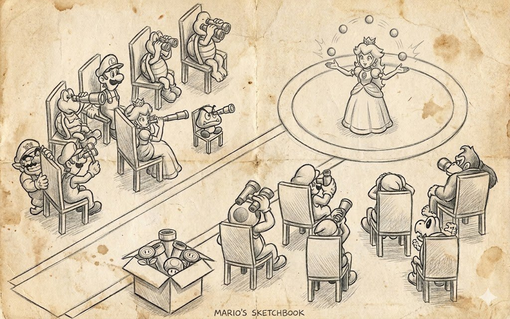
Nell'articolo precedente ho passato in rassegna i pattern e la necessità di compromessi nello sviluppo reale, e c'era un'idea che ho deliberatamente lasciato da parte. I pattern raramente vivono da soli, e qualsiasi sistema reale non è un singolo pattern ma diversi di essi, incollati, attorcigliati, appiccicati insieme e in alcuni punti inchiodati di lato, ciascuno dei quali chiude solo una parte del problema. Il resource manager è probabilmente l'esempio più eloquente di un simile mashup, perché dall'esterno di solito sembra un paio di righe come LoadTexture("bark.dds"), mentre all'interno è una cache, una policy di default, meccaniche di recupero dai guasti e un'altra mezza dozzina di cose, ognuna delle quali è passata attraverso sudore, sangue e pixel ed è rimasta nell'architettura di questo sistema.
Se apri un qualsiasi libro sullo sviluppo di giochi o di motori di gioco e provi a trovare una definizione di «risorsa di gioco», ottieni che una risorsa è un insieme di dati che è stato caricato o creato con parametri specifici. Qualsiasi qualificatore come «texture», «mesh», «suono» o «shader» è già ridondante qui, perché ciò che conta per noi non è la natura dei dati ma il fatto che esistano in una forma particolare.
La nozione di «una forma particolare» suona però ancora astratta, ed è per questo che si preferisce dire «texture», «mesh», «suono» e così via. Ma prendi una sola e medesima texture wall.dds, che puoi caricare in DXT5 con compressione, sRGB e un mip filter box, oppure senza compressione, in spazio lineare e con un filtro diverso. Formalmente avevamo un unico file su disco, ma dal punto di vista del resource manager queste sono ora due «risorse» diverse, perché i loro parametri differiscono. Sostituire una risorsa con un'altra a runtime può rompere il gioco, perché il gioco si aspetta dati specifici per uno shader — dati che sono cambiati dopo un filtro — o un layout di mip specifico che potrebbe rivelarsi assente.
Un esempio più esplicito per gli shader è quando lighting.fx compilato con la define SIMPLE_BUMP_MAPPING e lighting.fx compilato con PARALLAX_BUMP_MAPPING nel sorgente sono fisicamente un unico file, ma producono due pipeline diverse, ciascuna con i propri constant buffer e le proprie aspettative sul set di texture, e se il resource manager non capisce questo, comincerà a restituire la seconda variante quando viene richiesta la prima.
È la stessa storia con le mesh: ship.mesh caricato nel resource manager e lo stesso ship.mesh che risiede nella GPU sono due oggetti diversi la cui durata di vita e il cui comportamento in caso di device loss differiscono persino, per non parlare del fatto che il primo possiamo modificarlo e il secondo no.
Un caso a parte sono le risorse procedurali, perché non hanno alcun file su disco, e il ruolo della «sorgente» è spesso svolto da un generatore di rumore, e il manager deve conservare abbastanza informazioni da ricreare esattamente la stessa texture dopo un device loss o un cambio delle impostazioni di qualità, senza sostituirvi nient'altro — altrimenti il giocatore vedrà il pattern del fumo cambiare davanti ai suoi occhi o la piastrellatura del pavimento spostarsi.
In No Man's Sky, dove quasi tutta la parte visiva è procedurale, questo si risolve facendo sì che il seed del pianeta insieme all'insieme dei parametri di generazione sia di fatto l'«indirizzo» delle texture e delle mesh, e due console che hanno richiesto lo stesso seed sono obbligate a ottenere dati identici, altrimenti il multiplayer si sfascia completamente.
Da questo nasce un'idea non così ovvia ma, per il resto della storia, importante di identità della risorsa, e si enuncia così: due risorse sono considerate una sola e medesima se corrispondono sia la loro «sorgente» sia i loro «parametri». Tutti i resource manager nei motori moderni si reggono su questo, e quando in Source 2 o in Unreal stendi uno stesso materiale su mille recinzioni di un livello, il motore non crea mille copie ma restituisce uno stesso handle.
Da questa definizione, innocua e un po' filosofica, cresce quasi tutto il resto: la cache, i gruppi di default, il comportamento in caso di device lost e le meccaniche di hot-reload sui cambi di impostazioni. Resta da riconoscere che una risorsa è una coppia (source, parameters), e solo quella coppia può essere usata come chiave in una hash table e deve essere conservata accanto alla risorsa stessa nel caso in cui vada ricreata.
Cosa fa un resource manager
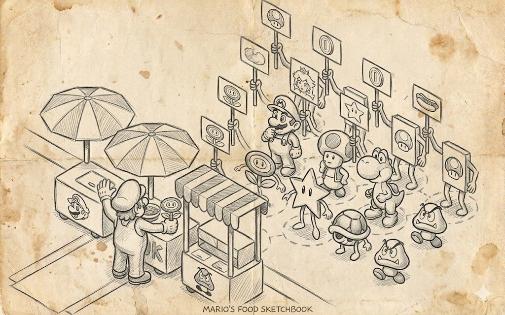
Se teniamo a mente che una risorsa è una coppia «sorgente più parametri», allora in questa visione del mondo il resource manager risulta non essere solo una tabella, e ha senso isolarlo come un sottosistema a sé del motore in modo che i designer che costruiscono un livello non debbano pensare al DMA, o a un device perso, o al fatto che i parametri di mip filtering in un gruppo differiscano da quelli di un altro.
La prima e apparentemente semplice responsabilità di questo sottosistema è creare nuove risorse su richiesta. È qui che di solito compare una «trappola di design», perché la «creazione» viene facilmente intesa solo come caricamento da file, ma in pratica devi non solo leggere i dati dal disco ma anche decomprimerli e, se serve, collocarli in un punto adatto della memoria, il tutto ricordando esattamente cosa ne hai fatto, perché senza quei dati non sopravvivi a un device lost o a un cambio delle impostazioni di qualità e dovrai caricare tutto da zero.
Su PC è un'occorrenza abbastanza rara in condizioni normali e si verifica di fatto su un crash del driver (TDR, Timeout Detection and Recovery), il passaggio tra GPU sui laptop (iGPU ↔ dGPU), un cambio di risoluzione o fullscreen/finestra, o il risveglio dalla sospensione.
Su console non succede praticamente mai in condizioni normali, ma succederà su un cambio delle impostazioni HDR, un cambio della risoluzione di output, e su PS4/PS5 al cambio di una qualsiasi opzione legata alla scheda grafica.
Su mobile succede molto spesso, ed è una piattaforma dove il device lost è ormai un dato di fatto. Una chiamata in arrivo, il passaggio tra app, il blocco dello schermo, una batteria scarica — tutto questo porta a un device lost nel 99,9999% dei casi.
La parte più interessante comincia con le risorse procedurali, perché non abbiamo una sorgente sotto forma di file, e il ruolo della sorgente è svolto o da un algoritmo con parametri espliciti come NoiseTextureGenerator(128, 128, seed=42), o da qualcosa di più complesso come la geometria del livello corrente, e il manager è obbligato a ricordarlo come «sorgente», a saper ricreare la risorsa da esso a un'ora di gioco, e a non confondere NoiseTextureGenerator(128, 128, seed=42) con NoiseTextureGenerator(128, 128, seed=43), perché per l'utente questi sono due rumori diversi anche se appaiono quasi indistinguibili.
Nel già citato No Man's Sky non ci sono affatto «texture dei pianeti» negli archivi del gioco — altrimenti la dimensione del gioco gonfierebbe fino a un paio di terabyte — ma c'è un algoritmo che ricostruisce ogni volta lo stesso mondo a partire da un seed e da un insieme di parametri di bioma, e il motore lì è costretto a vivere in un mondo in cui le texture non esistono in linea di principio (per gli oggetti procedurali), e l'unica verità su una risorsa è la catena di generatori e i loro argomenti.
Un altro caso interessante è la creazione di una risorsa «vuota» per dati di runtime. Questo copre tutto, dai render target e il G-buffer agli stati intermedi delle particelle o alla proiezione delle ombre. Qui non c'è affatto una sorgente in quanto tale, e il manager è obbligato a gestire anche questo caso, perché in un gioco reale simili risorse senza nome finiscono per essere quasi più numerose di quelle caricate da disco, e ognuna di esse può andare persa allo stesso modo su un device reset e deve essere ricreata nello stesso formato e nella stessa dimensione.
Da questo trio nasce la comprensione che il manager dovrebbe avere essenzialmente un unico punto di ingresso in grado di accettare o un percorso, o un generatore, o una descrizione di buffer vuoto, e per tutti e tre i casi restituire una risorsa della stessa natura, perché il resto del motore non dovrebbe sapere da dove esattamente provengano i dati e dovrebbe lavorare con l'handle allo stesso modo indipendentemente dalla sua origine.
VertexBufferManager::create(4, VertexDeclaration().texcoord(0));
TextureManager::create(new NoiseTextureGenerator(128, 128));Nel primo caso creiamo un buffer vuoto per quattro vertici e dichiariamo esplicitamente che aspetto hanno, e nel secondo, invece di un percorso a un file, gli infiliamo un generatore di rumore, e il manager è obbligato a conservare quel generatore, perché senza di esso la stessa texture non potrà essere ricostruita in seguito.
Dall'esterno entrambe le chiamate sono solo create, e il programmatore non deve tenere a mente tre API diverse per tre casi diversi, che è esattamente quella «una riga per caricare» per cui siamo disposti a pagare con un numero di overload che cresce in modo esponenziale.
Tra gli analoghi videoludici questa mescolanza si vede meglio in Minecraft, dove una sola e medesima chunk mesh può avere una «sorgente su disco» sotto forma di una regione di mondo salvata, una «sorgente come algoritmo» alla prima generazione di una nuova area, e una «sorgente come modifica del giocatore» quando il chunk è già esistito ed è stato scavato, e il motore in tutto ciò è obbligato a trattare la chunk mesh come uno stesso tipo di risorsa, con la sua durata di vita e le sue regole di scaricamento.
Altrimenti dovresti costruire tre sottosistemi paralleli che fanno la stessa cosa in tre modi diversi. Gli atlanti di blocchi e oggetti lì sono creati esattamente sullo stesso principio, e a seconda di quali mod e texture pack sono abilitati, l'atlante risultante viene assemblato a runtime come una risorsa procedurale con una sorgente della forma «tale e tale lista di texture, tale e tale risoluzione, tali e tali impostazioni di filtering», e finché quella lista non è cambiata, il motore ha tutto il diritto di non ricostruire l'atlante, perché i parametri non sono cambiati e l'identità della risorsa è preservata.
Il caching
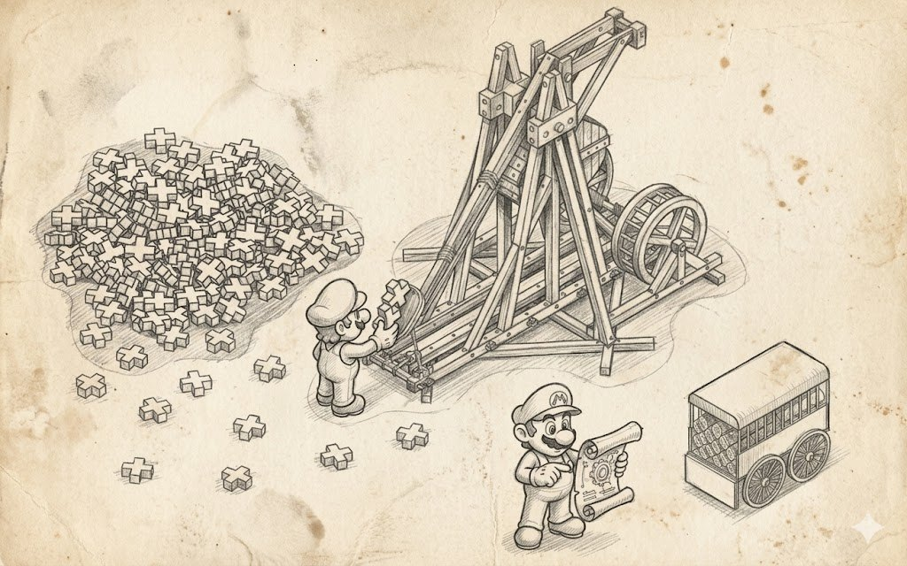
Se il primo punto sulla creazione delle risorse rispondeva alla domanda «come», il secondo risponde alla domanda più dolorosa «quante volte», perché in un gioco reale una sola e medesima risorsa viene richiesta centinaia e migliaia di volte, e un'implementazione ingenua in cui ogni richiesta di una texture di corteccia va su disco, decomprime il DDS e lo mette in un nuovo blocco di VRAM, già nella prima scena boschiva mangerà tutta la memoria video e andrà OOM prima di mostrare un solo frame.
Senza un sistema di caching l'intera idea di un resource manager perde di significato, e risulta che il caching non è una parte meno importante del sistema di risorse rispetto alla capacità di caricare effettivamente quelle risorse. Cioè, la capacità, in risposta a una richiesta ripetuta con la stessa sorgente e gli stessi parametri, di restituire proprio quell'oggetto che già vive in memoria, e di farlo in modo che il programmatore non lo sospetti nemmeno e continui a scrivere il suo LoadTexture("bark.dds") ovunque voglia.
Tecnicamente tutta questa magia si riduce a uno schema piuttosto noioso in cui il manager ha una hash table la cui chiave è una coppia di «sorgente e parametri» e il cui valore è una weak reference a una risorsa già creata, e a ogni richiesta il manager prova prima a trovare quella chiave, e solo se non la trova va a creare effettivamente la risorsa. E se l'ha trovata, restituisce l'handle esistente. Una weak reference serve perché se conservi una strong reference nella cache, la risorsa non verrà mai scaricata dalla memoria, anche quando l'ultimo oggetto di gioco che la usava è morto da tempo.
Anche il reference counting in questo schema deve essere non semplice ma a cancellazione differita, e non appena l'ultimo proprietario è sparito, la risorsa viene inviata a una coda LRU, dalla quale verrà poi espulsa se lo spazio serve per qualcosa di più rilevante.
Questo trucco dell'LRU è particolarmente importante su console e mobile, dove non c'è uno spazio di indirizzi virtuali grande quanto un disco, e il manager deve capire che anche una cache costruita correttamente in termini di reference prima o poi supererà il budget di memoria video disponibile, e in quel momento va presa una decisione su chi espellere. E anche l'espulsione va fatta con saggezza, perché due frame dopo le texture «calde» verranno richieste di nuovo, altrimenti la cache si trasforma in un'anti-cache che non fa altro che ricaricare gli stessi asset in loop.
Ecco perché in un'implementazione normale la hash table viene sempre accompagnata da qualche meccanismo di aging o da una lista addirittura esplicita di «questo handle non è stato usato da un po'», e Unreal Engine, nel suo sistema di texture streaming, tiene in memoria solo le texture che la camera del gioco ha raggiunto negli ultimi secondi.
Un'implementazione di una simile cache permette di disabilitarla. Il disabilitamento globale serve durante lo sviluppo e durante l'hot-reload degli asset, quando un artista ha riesportato una texture e vuole che il motore prenda la versione fresca da disco invece di restituire quella presente nella cache dalla run precedente, e in questa modalità l'intera cache viene semplicemente ignorata, il che ovviamente uccide le prestazioni ma dà un feedback istantaneo sulle modifiche, che per il lavoro iterativo conta più di qualsiasi FPS.
Ma ci sono momenti in cui sappiamo che questo particolare caricamento è sicuramente una tantum e metterlo in cache è inutile, e qui usare la cache risulta, beh, super costoso. Un esempio sono le schermate di caricamento: la texture lì vive per qualche secondo, e ficcarla nella cache sarebbe molto più costoso che semplicemente caricarla direttamente, bypassando la cache.
Tra gli esempi videoludici il più trasparente e ben documentato è stato e resta id Tech 3 e i suoi discendenti, dove R_FindImageFile e S_FindSound sono costruiti sullo schema di «nome file» più «qualche flag» come mipmap e allowPicmip, che formano la chiave, e la ricerca stessa passa attraverso una semplice hash table, cosicché decine di migliaia di accessi alla stessa texture di muro gothic_block/blocks17 nel corso di un match di Quake 3 in realtà risultano in un caricamento da disco e un'allocazione di VRAM, e tutto il resto è solo restituire un puntatore già pronto.
Ecco perché un livello con mille torce identiche sui muri gira esattamente alla stessa velocità di un livello con una singola torcia, purché la VRAM basti per la risorsa stessa almeno una volta. Unity nello stesso ruolo usa Resources.Load, che deduplica per percorso dell'asset e impostazioni di import, e in un'implementazione più moderna la chiave diventa semplicemente un indirizzo e un insieme di tag, ma l'idea è la stessa, e quando nell'editor trascini uno stesso ScriptableObject in dieci posti diversi, a runtime è comunque un singolo oggetto, non dieci copie, e cambiare uno dei suoi campi tramite l'inspector significa cambiarlo ovunque in una volta sola.
Reload e ricreazione di una risorsa
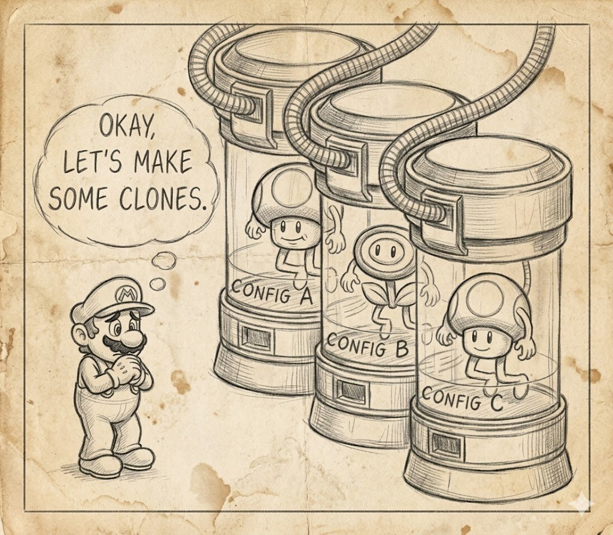
All'inizio di un progetto questo appare come «scarica e ricarica», immaginandoti in testa una coppia di funzioni Unload e Load chiamate quando premi il pulsante «applica» nel menu delle impostazioni. Il problema di questo schema semplice è che funziona fino a quando non c'è nel gioco almeno una risorsa per cui un artista o un game designer ha detto esplicitamente «non toccarla, mi serve esattamente così e non in altro modo».
Non appena compare una simile risorsa, il che accade all'incirca entro la prima giornata di lavoro, l'ingenuo Unload+Load comincia a sovrascrivere le impostazioni manuali, e il logo dell'azienda sul muro del bar, che l'artista ha caricato appositamente senza mip filter, dopo il primissimo reload ottiene tutti i suoi mip e si trasforma in poltiglia, mentre le normal map del viso del protagonista, su cui sono state spese due settimane, a un cambio delle impostazioni di qualità si dimezzano tutte allegramente, perché quello è il nuovo valore di default.
Ecco perché un reload corretto, entro il secondo giorno, si trasforma nel cambiare i parametri di default di un gruppo di risorse ricreando al contempo quelle di esse i cui parametri sono effettivamente cambiati. Al tempo stesso, il reload è obbligato a rispettare la suddivisione dei parametri in espliciti e impliciti, cioè a cambiare solo quei valori che erano stati presi dai default del gruppo, e a non toccare quelli che un artista o designer ha specificato esplicitamente al caricamento iniziale.
Dal punto di vista dell'API questo significa che il manager, oltre ai familiari Load e Create, acquisisce un insieme di default e un insieme di metodi di reload di varia granularità, da «ricarica questa singola texture» a «ricarica tutto tranne la UI», e questi metodi non si duplicano a vicenda, perché in un gioco reale servono entrambi, più un paio di intermedi.
TextureManager::setDefaultMipFilter(Texture::mf_box_sharpen_soft);
TextureManager::reloadAllExceptGroup("ui");
TextureManager::setDefaultEffect(new ResizeBitmapEffect(vec2(0.5f, 0.5f)));La prima riga imposta un nuovo mip filter di default, che di per sé non fa nulla alle texture già caricate e cambia soltanto la regola per tutti i caricamenti futuri e tutti i reload futuri.
In un'implementazione sbagliata, il setter del default proverebbe immediatamente a percorrere tutte le texture e a ricrearle, non dando alcuna possibilità di cambiare atomicamente più parametri in una volta. La seconda riga è ciò che effettivamente lancia il reload di massa di "ui".
La terza riga imposta un altro default, questa volta un effetto di dimezzamento, e formalmente, per la logica precedente, richiede un altro reloadAll, ma in un'implementazione reale i setter di solito vengono combinati in una transazione e il reload viene chiamato una sola volta alla fine, altrimenti, cambiando una dozzina di parametri, otterremmo dieci passaggi completi su tutto l'insieme delle risorse con dieci accessi al disco.
Ci sono tonnellate di analoghi videoludici per questa meccanica, e il più ovvio è proprio l'atto di cambiare le impostazioni grafiche nel menu di pausa senza uscire al menu principale e senza un riavvio completo del livello. Nei giochi moderni questo è ormai percepito come qualcosa di talmente scontato che i giocatori cominciano a indignarsi quando incappano in eccezioni.
The Witcher 3, quando si cambiano le impostazioni di qualità, cambia il mip bias e i parametri di streaming, e alcuni asset vengono poi ricostruiti in background, e quelli ricostruiti sono esattamente quelli i cui nuovi parametri differiscono dai vecchi.
Gli asset dei volti dei dialoghi o dei modelli narrativi chiave, la cui qualità è hardcoded nello script della scena, restano com'erano, perché altrimenti in una cutscene il dettaglio della barba di Geralt calerebbe improvvisamente, e tutto l'intento artistico della scena si spezzerebbe a causa di una checkbox attivata per sbaglio nel menu.
Cyberpunk 2077 va ancora oltre, e a un cambio di DLSS, FSR o modalità di ray tracing non si limita a ricreare alcuni render target e catene di rendering, ma ridirige anche le code di draw interne sulle nuove risorse, il tutto senza perdere il salvataggio e senza sbattere il giocatore su una schermata di caricamento. Tecnicamente è un'operazione molto complessa che internamente è organizzata esattamente come caricare il gioco da zero — non solo le texture, ma modelli, mesh e risorse della render pipeline.
Hot-reload
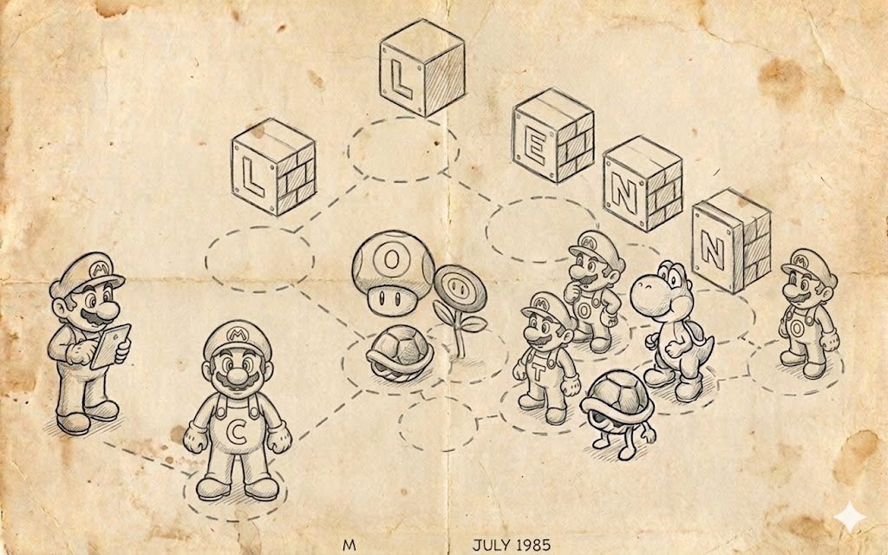
Un campo di rastrelli a parte intorno al reloading è l'hot reload durante lo sviluppo. È un meccanismo per cui un artista modifica una texture nel suo tool, poi salva, e il motore nota quel cambiamento attraverso il file system e, senza riavviare il gioco, ricrea esattamente la texture il cui file è cambiato, lasciando intatto tutto il resto.
Nei motori moderni come Unreal o Unity, l'hot-reload si riduce a un trigger del file system sulla directory Content e a un ReloadAsset(path) mirato, e qui serve un meccanismo di reload a parte, perché un reloadAll di massa distruggerebbe semplicemente il workflow dell'artista, costringendolo ad aspettare un minuto dopo ogni Ctrl+S.
Di per sé questo meccanismo sembra modesto, ma in pratica l'idea di «ricaricami per nome» si trasforma rapidamente in un mucchio di codice che sa trovare una texture sia nella tabella principale CTextureHandler sia nella cache separata CTextureResource, e non solo per nome esatto ma anche per sottostringa, per parametri e per data di ultima modifica, il che in un progetto grande con migliaia di asset risulta molto più importante di un semplice reload da disco.
Per di più, tool moderni come Photoshop o GIMP amano nascondere piccoli cambiamenti o la cronologia delle modifiche negli stream dei file, così pensi di aver premuto Ctrl + S e scaricato le modifiche su disco, ma il motore semplicemente non le vede, ed è per questo che devi «fare un po' di cucito notturno», cioè fare reverse engineering dei formati che il motore dovrebbe supportare.
Un altro motivo per cui il motore non vede le modifiche è che Photoshop e GIMP scrivono il file non direttamente, ma attraverso un file temporaneo con successiva rinomina, oppure tengono il file bloccato durante la scrittura, e l'evento del file system arriva nel momento in cui il file non è ancora scritto completamente o il descrittore non è ancora chiuso. Il motore apre il file e ottiene o un errore di accesso o dati incompleti, il che si risolve con un piccolo ritardo prima della lettura o con una logica di retry.
class CTextureReloader : public CReloadDispatcher
{
private:
bool ReloadTextureByName( const CString& TextureName )
{
bool succeded = false;
CString textureNameLower = TextureName;
textureNameLower.ToLower();
CTextureHandler* pTextureHandler = CGraphics::Get()->GetTextureHandler();
HTexture tex = pTextureHandler->GetTexture( TextureName );
if ( tex )
{
pTextureHandler->ReloadTexture( pTextureHandler->GetTextureIndexMT( TextureName ) );
succeded = true;
}
else
{
CTextureHandler::Iterator End = pTextureHandler->IteratorEnd();
for ( CTextureHandler::Iterator It = pTextureHandler->IteratorBegin(); It != End; ++It )
{
const int nTextureIndex = ( *It ).second;
CString sName = pTextureHandler->GetTextureName( nTextureIndex );
sName.ToLower();
if ( sName.Find( textureNameLower ) != -1 )
{
pTextureHandler->ReloadTexture( nTextureIndex );
succeded = true;
}
}
}
CArray<CPtr<CTextureResource>> AllTextures;
GfxGetAllTextures( AllTextures );
for ( int i = 0, e = AllTextures.GetSize(); i < e; ++i )
{
CString sName( AllTextures[ i ]->_Filename );
sName.ToLower();
if ( sName.Find( textureNameLower ) != -1 )
{
const bool bReloaded = GfxReloadTexture( AllTextures[ i ].AccessPtr() );
succeded |= bReloaded;
}
}
return succeded;
}Qui si vede la filosofia del reload: prima proviamo onestamente a trovare la texture per il suo nome esatto e a ricaricare solo quella, e solo se non c'è un nome simile allarghiamo la ricerca a una sottostringa e percorriamo tutte le texture in entrambi i sottosistemi, il tutto senza fare un reloadAll di massa di tutto quanto al mondo.
In questa forma l'idea di reload è sopravvissuta nel codice moderno quasi immutata. Il tooling attorno ad essa ha acquisito dettagli, ma l'essenza stessa è rimasta la stessa: il reload non è scarica-e-carica, ma uno swap mirato di esattamente quelle risorse che vanno davvero scambiate, senza toccare tutto il resto e senza perdere per strada i parametri che l'utente ha impostato esplicitamente.
Perdita del dispositivo grafico
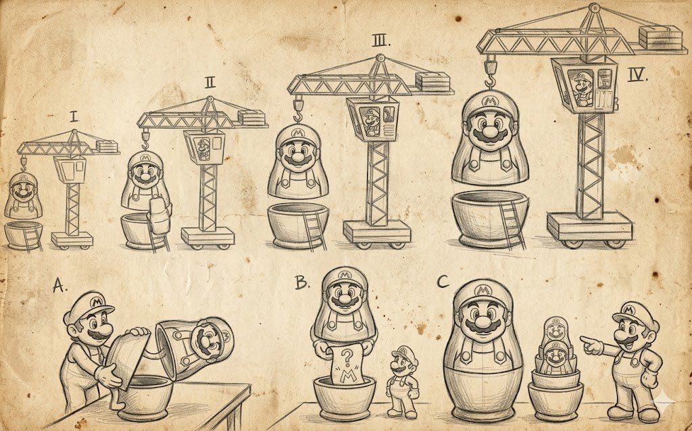
La cosa più detestata da tutti gli sviluppatori grafici è ciò che si chiama device loss. Per capire da dove sia perfino saltato fuori e perché meriti un punto a parte, bisogna tornare all'era di Direct3D 9 e ricordare che con quel modello il contesto grafico cominciò ad appartenere non al gioco ma al driver. Il driver aveva tutto il diritto di annunciare in qualsiasi momento che non abbiamo più VRAM, render target, o persino il dispositivo stesso, perché l'utente ha premuto Alt+Tab, o perché Windows è andato in sospensione, o perché il driver NVIDIA ha deciso di ricreare l'oggetto DXGI per le proprie esigenze interne, e in quel momento tutta la memoria video caricata si trasformava in una zucca, mentre il gioco doveva non crashare, non mostrare uno schermo nero e non perdere i progressi, ma ripristinare tutto ciò che c'era prima del device lost.
Per coesistere in qualche modo con questa nuova realtà, D3D9 introdusse la nozione di memory pool, e ogni risorsa alla creazione doveva essere assegnata a una di tre opzioni, ciascuna con il proprio profilo di comportamento al reset. Le risorse in D3DPOOL_DEFAULT vivevano direttamente in VRAM ed erano le più veloci con cui lavorare, ma in caso di device loss perdevano tutto il loro contenuto e dovevano essere ricreate manualmente; le risorse in D3DPOOL_MANAGED venivano duplicate dal driver in memoria di sistema, grazie a cui dopo il reset il driver stesso ripristinava il loro contenuto, il che era comodo, ma per questo pagavi con un consumo di memoria doppio e l'impossibilità di usarle come render target; e le risorse in D3DPOOL_DYNAMIC vivevano in un'area speciale per dati che cambiano di frequente ed erano create dal gioco a ogni frame.
Da questo zoo di pool nasce la necessità che il resource manager ora debba conservare, per ciascuna risorsa, la peculiarità della sua vita all'interno del driver, perché dopo un device loss non sarà possibile ricreare la risorsa in modo identico. Ora, alla ricezione di un segnale di device loss, devi liberare tutto ciò che era in VRAM, il tutto senza perdere gli oggetti wrapper stessi e i parametri accumulati, poi al reset percorrere tutte le tue risorse e ricreare ognuna con gli stessi dati di sorgente e gli stessi parametri che aveva in origine, oppure ripristinarle dalla copia managed se ce n'era una.
Nei moderni Vulkan, DX12 e Metal non ci sono più pool, e la nozione stessa di lost device sarebbe scomparsa, ma se scavi più a fondo, risulta che la stessa identica storia vive sotto nomi diversi e con messaggi un po' più criptici. In DXGI c'è ora il codice DXGI_ERROR_DEVICE_REMOVED, che arriva su qualsiasi Present o ExecuteCommandLists dopo che il driver decide che qualcosa non va con il dispositivo.
Per esempio, dopo un errore di timeout TDR o dopo il passaggio dell'adapter in un laptop tra la GPU integrata e quella discreta, e in risposta a questo il gioco è obbligato a buttare via tutto ciò che aveva, ricreare il device, la swapchain, la command queue, tutte le risorse e i pipeline state object, e continuare a renderizzare come se niente fosse, ed è esattamente questo che salva la maggior parte dei giochi PC dal 2015 in poi dal crashare dal nulla.
In Vulkan la situazione appare un po' più mite, perché il device lì formalmente non viene perso e semplicemente continua a funzionare, ma la swapchain ha tutto il diritto di restituire VK_ERROR_OUT_OF_DATE_KHR su un cambio di risoluzione della finestra o una ricreazione della window surface, e in risposta a questo devi eseguire lo stesso loop di invalidate-più-recreate per tutto, il che concettualmente non è diverso dal reset dell'era D3D9, solo che il problema viene catturato in un unico posto anziché spalmato su tutti i comandi.
Sulla Nintendo Switch con il suo sottosistema video NX tutta questa storia sale al livello in cui qualsiasi sospensione della console e qualsiasi passaggio tra modalità handheld e docked porta di fatto a una perdita del contesto GPU, e il motore è obbligato a ricreare tutti gli stessi contenuti dopo il resume, altrimenti il giocatore si risveglia dalla sospensione in uno schermo nero.
E se ora guardi tutto questo meccanismo con cui siamo finiti, risulta che il resource manager si è trasformato in un sistema di Undo/Redo. E proprio come Photoshop ricorda ogni pennellata, il resource manager ora deve ricordare ogni oggetto GPU creato con abbastanza dettaglio da ricrearlo. L'unica differenza è la direzione: l'Undo va indietro, mentre il recupero dopo un device lost va avanti attraverso la stessa cronologia dei comandi.
È esattamente per questo che «creare semplicemente una risorsa» risulta essere un pezzo di codice così voluminoso, quando «create» significa contemporaneamente «scrivi nel journal», e più dettagliata è la voce, più economico risulta poi lavorare con la risorsa.
Estensibilità senza riscrivere il core
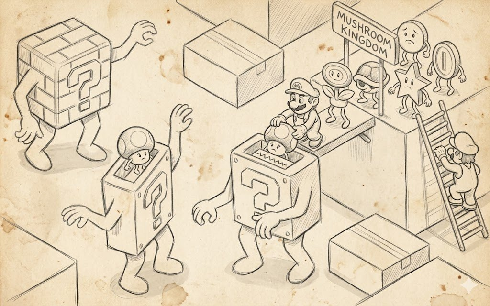
Il lato meno ovvio del resource manager risulta essere non come si comporta una risorsa durante il gioco, ma come il sistema di risorse sopravviverà alla propria evoluzione su un orizzonte di uno, tre e cinque anni, quando nel progetto compaiono nuovi tipi di dati, nuovi formati di file, nuovi sottosistemi di rendering e nuovi requisiti da parte degli artisti.
Nessuno di questi cambiamenti dovrebbe trasformarsi in una modifica del core del manager, il che suona astrattamente architetturale, ma in una cattiva implementazione, aggiungere un nuovo tipo di asset come «ora avremo i chunk di voxel» o «supportiamo le insegne al neon per le scritte luminose» ti costringe ad arrampicarti nel file con il TextureManager già esistente, aggiungere lì un nuovo enum, un nuovo switch-case e nuovi campi. Dopo una dozzina di simili modifiche, questo file si trasforma in una mietitrebbia da diecimila righe che nessuno osa toccare, perché qualsiasi movimento in esso rompe inaspettatamente qualcosa.
Idealmente, i manager di tipi di risorse diversi sono entità diverse, e TextureManager non sa nulla degli shader, mentre ShaderManager non dovrebbe sapere nulla dei vertex buffer, e a livello di codice non hanno nulla in comune tranne l'idea. Ma proprio quell'idea — che abbiamo una coppia «sorgente più parametri», che c'è una cache per questa chiave, che c'è il reference counting, e che c'è la capacità di ricreare una risorsa dopo un device loss — si ripete identica in tutti i manager.
Ecco perché fare ogni manager separatamente significa o propagare gli stessi bug in angoli diversi della codebase, o correggere lo stesso problema tre volte. Perciò in un sistema normale, sotto tutti i manager si trova una base templata comune che è responsabile di tutte queste meccaniche noiose ma obbligatorie, e lascia al manager specifico solo le specificità del lavoro con il proprio tipo di risorsa. Per esempio, esattamente come ottenere un HTexture da un file DDS, o come assemblare un oggetto shader da sorgente HLSL.
Ora «aggiungere un nuovo tipo» diventa «aggiungere un nuovo manager più la registrazione», perché ogni tipo ha il suo manager e una base comune si trova sotto tutti loro, e un nuovo tipo di asset è solo una nuova classe ereditata dalla risorsa, e un nuovo manager ereditato dalla cache templata, e da nessuna parte nei file esistenti devi aggiungere una singola istruzione switch.
Come esempio di come questo schema appare in un grande motore commerciale, è comodo guardare Unreal Engine, dove il tipo base è UObject, sotto di esso vive UAssetManager, che non sa nulla degli asset specifici e si limita a tenere traccia dei loro ID primari e a raggrupparli per tipo.
Le factory stesse vivono separatamente per ciascun tipo, così per UTexture c'è il suo insieme di classi tipo UTextureFactory, per UStaticMesh il suo, per USoundWave il suo, e aggiungere un nuovo tipo di asset, qualche UProcMaterial o UNiagaraEmitterAsset, segue esattamente lo scenario di «una nuova classe più la registrazione della factory», senza modifiche al core di UAssetManager.
In Godot è la stessa logica, ma lì, invece delle factory ci sono sottoclassi di Resource, e invece di una grande gerarchia di manager c'è un unico ResourceLoader che sa trovare il loader giusto per estensione del file, e di nuovo, aggiungere un nuovo tipo di asset si riduce a scrivere una sottoclasse e registrare il corrispondente ResourceFormatLoader, e ResourceLoader stesso non viene toccato nel processo, perché lavora non con asset specifici ma con un'interfaccia di caricamento, e non gli importa cosa esattamente venga caricato — una static mesh o una texture procedurale.
Il prezzo di questa estensibilità, come spesso accade, è quasi invisibile se non ti arrampichi nel codice del motore. Nel solo texture manager del mio progetto attuale ci sono in tutto circa 700 funzioni, di cui circa 200 sono diverse varianti di load, circa 100 sono reload, altre 200 sono create, e tutto questo volume è stato generato dai dati di un generatore templato che è stato configurato una volta per la lista dei parametri delle texture e poi semplicemente rieseguito ogni volta che un parametro andava aggiunto o rimosso.
Questa cifra, se ci pensi, è il vero prezzo del permettere al programmatore di scrivere load(path, compression, effect) in una singola riga e di non pensare a come esattamente quella riga si trasformi nella variante di load giusta, ed è esattamente qui che va a finire tutto il risparmio di comodità dell'API che otteniamo nello strato superiore del motore.
class CResource : public CRefCountable<CResource>
{
public:
CResource()
: _pCache( NULL )
{
}
protected:
template <typename, typename, typename, typename, typename>
friend class CResourceCache;
virtual ~CResource() = default;
virtual void Delete() const { delete this; } // Give a chance for subclasses to handle their own delete
friend void RefCounted_AddRef( const CResource* pResource );
friend void RefCounted_Release( const CResource* pResource );
CResourceCacheBase* _pCache;
};Questa classe non ha né un tipo di dato, né un nome di file, né caricamento, né parametri. È una decisione deliberata, e tutto il suo senso è che qualsiasi tipo di risorsa specifico, da una texture a una mesh a un oggetto shader, è costruito come sottoclasse di CResource che aggiunge esattamente i campi di cui ha bisogno, mentre le meccaniche del ciclo di vita sono comuni a tutti.
Tutto il codice complesso legato al caching per chiave, alla protezione multithread, alla gestione della cancellazione e alla distribuzione di weak reference è portato via nel CResourceCache templato, che è parametrizzato da tre cose: il tipo di risorsa stesso, il tipo di chiave e il tipo di mutex per il locking:
template <typename ItemType,
typename KeyType = CString,
typename LockType = CMutex,
typename TKeyHasher = SHash<KeyType>,
typename TKeyEquals = std::equal_to<KeyType>>
class CResourceCache : public CResourceCacheBaseDa questo template vengono poi derivate le cache specifiche per le texture, per le mesh, per i programmi shader e per tutto il resto nel motore che richiede shared ownership e deduplicazione basata su chiave, e ciascuna di esse esce essenzialmente gratis per l'architettura, nel senso che per essa non devi aggiungere codice separato di gestione dei reference, thread safety separata o gestione separata della cancellazione — tutto ciò è già implementato nel template e verificato su una singola istanza di codice che viene poi semplicemente riutilizzata.
E quando domani il progetto vorrà configurare, poniamo, un nuovo tipo di asset come una cache di icone di missioni scriptate o una cache di clip audio di dialogo, lo sviluppatore non dovrà riscrivere GfxGetTexture, né i walker di OnLostDevice, né le meccaniche di reload, perché aggiungerà semplicemente una nuova sottoclasse di CResource con i propri campi e configurerà per essa un'istanza di CResourceCache<MyNewResource, MyKeyType>, e l'intera infrastruttura di risorse del motore si estenderà automaticamente al nuovo tipo.
Questa capacità di aggiungere con calma nuovi tipi di asset per anni senza modificare i file centrali e senza timore di rompere ciò che funziona da tempo è il vero test di estensibilità di qualsiasi resource manager, perché una bella API all'inizio di un progetto può disegnarla chiunque, ma sopravvivere a dieci anni di commit da team diversi con diversi livelli di comprensione architetturale e non trasformarsi in un TextureManager.cpp di quindicimila righe con centosettantacinque switch case per tipo di asset — solo un sistema in cui i tipi di risorsa sono disaccoppiati l'uno dall'altro fin dall'inizio, e tutte le meccaniche comuni sono onestamente portate via in un'unica base templata, può farlo.
Parametri e gruppi come chiavi
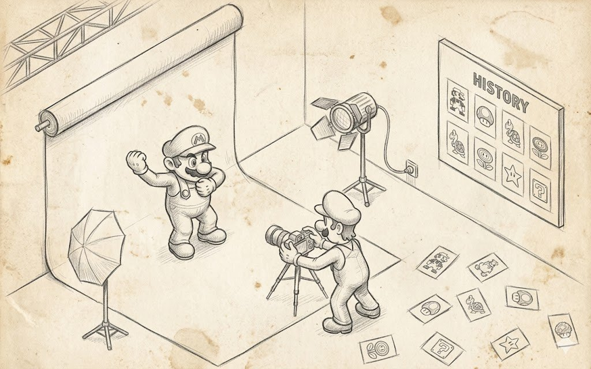
Se la prima metà dell'articolo riguardava cosa il manager è obbligato a fare all'esterno, ora possiamo parlare di come è organizzato all'interno, e il ruolo centrale in questa organizzazione è svolto dai parametri, perché è la loro scelta che determina quanto sarà comodo per il programmatore vivere con questo sistema, quanto velocemente girerà, e quanto indolore sarà possibile farlo evolvere.
La prima regola di un buon resource manager, secondo gli standard data-driven odierni, appare crudele. L'insieme dei parametri per ciascun tipo di risorsa dovrebbe essere fisso e definito nella fase di design del sistema, non scelto al volo da JSON o YAML arbitrari, come amano fare i motori moderni, dove la configurazione di un asset spesso appare come un dizionario aperto (l'approccio Unity) in cui puoi mettere quasi qualsiasi cosa.
Per capire perché sia così, bisogna guardare l'insieme standard di parametri per una texture, cioè: il memory pool in cui vivrà la texture, la compressione, che determina sia il formato dei dati sia la dimensione finale in VRAM, il numero di livelli di mip generati, il filtro che genera proprio quei mip, e infine un bitmap effect a parte, nel cui ruolo può agire qualsiasi cosa.
Ciascuno di questi campi è un'interfaccia esplicita, concreta, ponderata in anticipo, e se provi ad aggiungere qualche nuovo campo a questa lista, per esempio un colore di evidenziazione dello sfondo o un commento dell'artista, risulta che lì non servono, perché non influenzano né come appare la risorsa in memoria né come viene renderizzata.
Questo significa che non hanno il diritto di formare l'identità della risorsa e di far parte della chiave della cache, ed è esattamente da questo che deriva il primo vantaggio di un insieme fisso: qualsiasi parametro presente nella struttura di load deve effettivamente cambiare qualcosa nei dati o nella loro rappresentazione, e se è stato aggiunto lì «per ogni evenienza», è garantito che romperà o la cache, o il reload, o il recupero dopo un device lost.
Il secondo vantaggio di un insieme fisso di parametri compare quando il manager comincia a distribuire qualcosa e ad accettare qualcosa dall'esterno, e avendo un insieme prefissato puoi descriverlo con una singola struct, passarlo per valore, confrontarlo byte per byte, calcolarne l'hash con una singola funzione, serializzarlo e così via.
Una map aperta da stringa a variant, invece, ti costringe a ogni accesso a costruire chiavi stringa, catturare refusi, controllare che nel valore sia stato messo il tipo giusto e confrontare con attenzione i valori tenendo conto del fatto che due map equivalenti possono avere un ordine delle chiavi diverso.
Chiunque abbia debuggato anche una sola volta un bug in un progetto Unity in cui Resources.Load restituiva una copia in cache di un asset perché una nuova opzione di import è finita non nella chiave della cache ma in qualche map vicina, capisce benissimo come finisce nella realtà, e che aggiungere il colore come parametro di una texture riguarda esattamente questa classe di bug.
Ripeto che qualsiasi estensione della lista dei parametri deve essere un passo di design consapevole, non un effetto collaterale del fatto che qualcuno nel codice aveva bisogno di una variabile in più.
Una cosa non meno importante si manifesta solo dopo che l'intero sistema è stato scritto, al momento di rileggerlo un anno dopo o da parte dei colleghi, perché una struct di parametri fissa è di fatto la documentazione dell'interfaccia, e una persona che ha aperto l'header del resource manager vede immediatamente che questi otto campi sono tutto ciò che c'è da dire sul caricamento di una texture.
Non devono arrampicarsi in altri dieci file per scoprire quali altre chiavi implicite in quali altri config cambiano il comportamento, mentre nello schema «JSON al volo» questa documentazione fisicamente non esiste, e l'unico modo per scoprire le chiavi supportate è o trovare il punto dove vengono parsate, o aprire il config del progetto dell'anno scorso e sperare che abbia la lista completa assemblata.
Questo diventa particolarmente doloroso in progetti grandi come Cyberpunk, dove team diversi hanno lavorato al motore per molti anni, e qualsiasi opportunità di «infilare una chiave nel json e notarla da qualche parte in seguito» si trasforma inevitabilmente in centinaia di simili chiavi sparse tra la mod e il gioco base, e il comportamento di una risorsa comincia a dipendere da una combinazione torbida di impostazioni che formalmente non sono documentate affatto da nessuna parte — benvenuto in un progetto grande, come si suol dire.
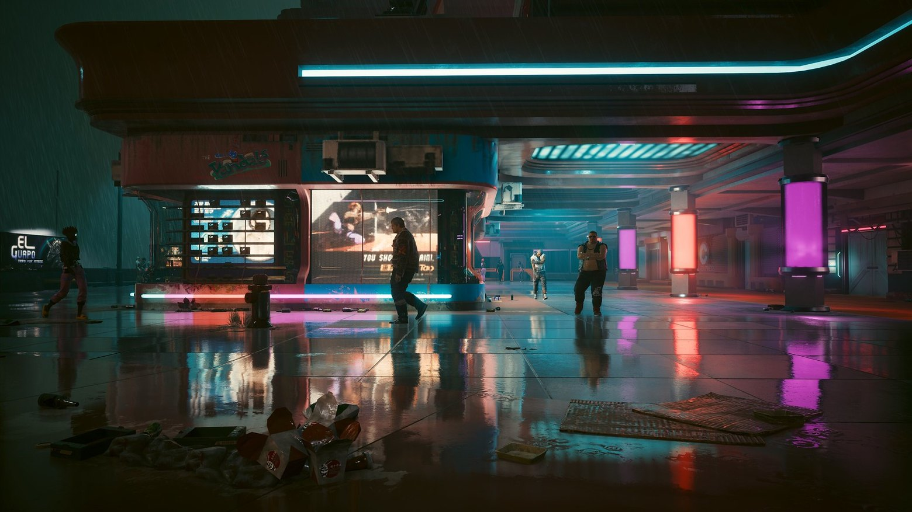
Al tempo stesso è importante non confondere un insieme fisso di parametri con l'assenza totale di un approccio data-driven, perché il valore di ciascun parametro in sé può benissimo essere impostato da un config, dalle impostazioni di import di un asset, o persino da argomenti della riga di comando, e qui non c'è contraddizione con la regola dell'insieme fisso di parametri, perché il punto non riguarda la sorgente dei valori ma l'insieme dei campi della struct in cui quei valori vengono collocati.
Cioè, un artista può scrivere mipFilter: Mitchell e compression: BC7 nel file meta di una texture, ed è assolutamente ok, ma il fatto che la texture abbia esattamente questi due campi ed esattamente questi valori è vigilato da una struct C++ dichiarata nella fase di design del motore, e qualsiasi tentativo di mettere, poniamo, coolnessLevel: maximum in questo file meta dovrebbe risultare in un errore nella fase di import anziché essere ignorato, perché altrimenti col tempo questi coolnessLevel cominciano a moltiplicarsi di numero e a ingombrare i dati con un significato che solo il proprietario di quella texture comprende.
struct STextureOptions
{
STextureOptions();
COptional<SColorSubstitution> _ColorSubstitution;
uint _nMipSkipCount = 0U;
bool _bReportMissingTexture = true;
bool _bForcePOW2 = false;
bool _bIssRGB = false;
bool _bSaveAlpha = false;
bool _bUseMinMipSkip = true;
};E questa struct dall'aspetto semplice, insediatasi nell'header del motore da qualche parte intorno alla riga novemila e qualcosa, è l'incarnazione pratica della regola «un insieme fisso di parametri per tipo», perché può essere copiata, confrontata, hashata, inviata nella cache come parte della chiave, serializzata su disco, riparsata, e sai sempre cosa c'è dentro, indipendentemente da chi e quando ha aggiunto nuove proprietà al json di un asset vicino.
È esattamente da questa prevedibilità che cresce tutto il resto della costruzione, dai default di gruppo al reload mirato, perché puoi cambiare e sovrascrivere solo ciò il cui insieme è noto in anticipo.
Cambiare le impostazioni senza un riavvio completo
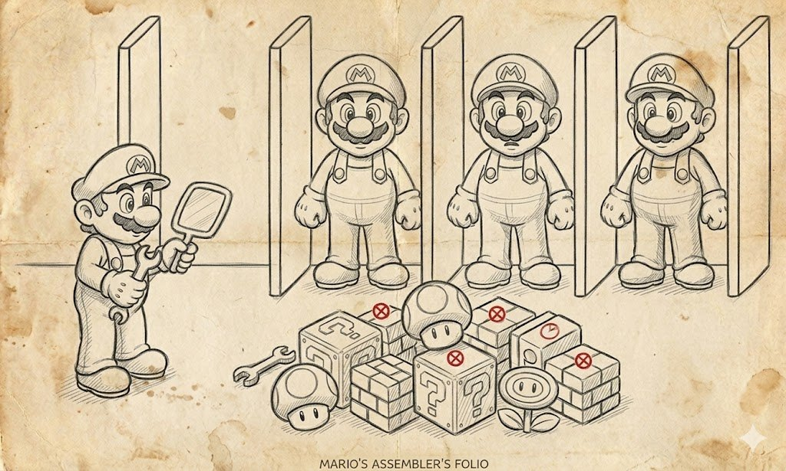
A questo punto, spero, nella tua testa si è formata un'immagine completa dell'organizzazione del resource manager: che le risorse sono dati con un insieme fisso di parametri, da gruppi con i propri default, e da valori espliciti-impliciti con un flag su ciascun parametro.
Torniamo a ciò per cui tutta questa meccanica è stata avviata, perché la principale giustificazione di tutti questi sforzi architetturali è proprio il cambio delle impostazioni grafiche proprio durante il gioco. Sì, tutto questo è risultato necessario per fornire la condizionale semplicità di 5 minuti passati in un menu.
Per capire la differenza tra una buona implementazione e una cattiva, sarà comodo descrivere prima il percorso cattivo, a cui molti motori arrivano naturalmente, e poi passare in rassegna quello buono, che richiede più lavoro in anticipo ma poi ripaga ogni volta che il giocatore si arrampica nel menu per cambiare qualcosa.
Economico e veloce
L'implementazione più semplice e intuitiva del cambio delle impostazioni grafiche appare così: scriviamo i nuovi valori nel config, poi uccidiamo onestamente l'intera scena caricata con tutte le sue texture, mesh, shader e render target, e poi carichiamo di nuovo il mondo, ora con i nuovi valori globali dei parametri.
Formalmente qui è tutto corretto, perché il nuovo mondo esce completamente nuovo, nessuna vecchia risorsa con le vecchie impostazioni resta da nessuna parte, e lo stato del motore dopo il cambio delle impostazioni è esattamente lo stesso di come se avessimo avviato il gioco con questi parametri fin dall'inizio.
Per via di questa semplicità e correttezza formale, l'approccio vive in molti motori, e i giochi mobile prendono questa strada con particolare entusiasmo, perché l'avvio della loro scena rientra in tre-cinque secondi, e il giocatore tollera una simile pausa senza troppe obiezioni, tanto più che il menu delle impostazioni su mobile viene aperto una volta ogni sei mesi.
I problemi cominciano quando si tratta di giochi grandi con un lungo avvio del livello, e qui si può puntare il dito su quasi ogni gioco fino alla fine degli anni 2010, dove cambiare le impostazioni grafiche significava di fatto che il motore scarica l'intera mappa e poi la carica di nuovo, e con livelli grandi questo richiedeva da tre a cinque minuti di tempo reale.
Un giocatore che è andato nel menu solo per sperimentare con le checkbox scoprirebbe che abilitarne una richiede quattro minuti, guardare il risultato mezzo minuto, rendersi conto che l'effetto è così così, e ridisabilitarla altri quattro minuti, e alla fine ogni tocco delle impostazioni grafiche si trasformava in una quest a sé, a cui molti rinunciavano dopo i primi due tentativi.
Un simile approccio non è adatto ai giochi seri, perché il giocatore tocca le impostazioni grafiche non una volta in tutta la vita del gioco, ma almeno diverse volte al primo avvio, poi all'uscita di un update, poi all'uscita di una patch, poi all'acquisto di un DLC, e ogni simile tocco non dovrebbe costargli cinque minuti di tempo reale.
Lungo e costoso
L'approccio alternativo, usato nei motori moderni, è costruito sull'idea che non uccidiamo il mondo ma usiamo il meccanismo di reload per cambiare solo ciò che va davvero cambiato. Ciò che le nuove impostazioni non toccano resta intatto.
L'idea è indecentemente semplice e si riduce a tre passi che si ripetono ogni volta che il giocatore cambia qualcosa nel menu. Il primo passo, eseguito già nella fase di design, è suddividere tutti gli asset in gruppi legati alle impostazioni grafiche, e farlo in modo che nessun singolo cambio di impostazione richieda di ricaricare parte di un gruppo, ma solo l'intero gruppo in una volta.
Cioè, se nel menu c'è un'opzione separata «qualità delle ombre», allora ci dovrebbe essere il suo gruppo shadows a essa dedicato, in cui ricadono le shadow map, i render target delle cascate d'ombra, le copie downsampled e altre risorse specifiche delle ombre, e quando questa opzione viene cambiata ricaricheremo esattamente quel gruppo, senza toccare la UI o le normali texture del mondo.
Il secondo passo è la reazione a runtime ai cambiamenti, e chiama il setter del default per il gruppo corrispondente con il nuovo valore, e subito dopo chiama reloadGroup dello stesso gruppo. Dopodiché il manager percorre tutte le risorse del gruppo e ricrea quelle di esse il cui valore corrente di questo parametro era implicito, cioè preso dal default, e non tocca quelle dove era impostato esplicitamente al load.
In codice appare all'incirca così
TextureManager::instance().setDefaultShadowResolution(1024)
TextureManager::instance().reloadGroup("shadows")E l'intero processo di cambio dell'impostazione delle ombre richiede esattamente il tempo necessario a ricostruire le risorse delle ombre stesse, senza uscire dalla mappa e senza rileggere decine di megabyte di texture del mondo che con la qualità delle ombre non c'entrano affatto.
E questa, in sostanza, è proprio quella «feature di reload» per cui è stata avviata tutta la tiritera con i parametri espliciti e impliciti, perché senza conservare separatamente questa coppia insieme a ciascuna risorsa, a qualsiasi cambio del default di un gruppo cancelleremmo tutte le modifiche artistiche e la messa a punto fine di asset specifici.
Un effetto collaterale della costruzione risultante è che all'avvio del gioco possiamo non fare nulla per ripristinare le impostazioni della sessione precedente, ma semplicemente leggere il file di config con le impostazioni dell'utente, impostare i default di tutti i gruppi con quegli stessi setter, e dopodiché avviare il caricamento dei contenuti. Allora tutte le risorse al loro primissimo load ottengono i valori di parametro giusti, non avendo ereditato nulla di superfluo dai default che il programmatore ha cotto nel codice, perché per loro il default del gruppo sarà già ciò che l'utente ha scelto.
I moderni giochi grandi, nelle loro incarnazioni più riuscite, funzionano esattamente secondo questo schema. Un buon esempio qui è Overwatch, che riesce, a un cambio degli effetti o della qualità delle ombre, a non riavviare il match, a non uscire nella lobby, e a non fare nemmeno una pausa percettibile, e il giocatore può scegliere un preset comodo senza perdere nulla del suo stato, e cambiare un preset è un cambio di default più un reload mirato degli asset che dipendono da quel preset.
Red Dead Redemption 2 va nella stessa direzione, e il cambio dei preset avviene senza uscire al menu principale e senza un riavvio completo del mondo, e in condizioni favorevoli il giocatore vede solo un breve sfarfallio, dopo il quale il mondo continua a girare già con le nuove impostazioni.
In tutti questi casi, dietro la magia esteriore si trova esattamente lo stesso schema a tre passi, solo avvolto in engine di streaming più complessi. Non devi uccidere il mondo per cambiare una delle sue manopole.
Cosa hanno i motori moderni
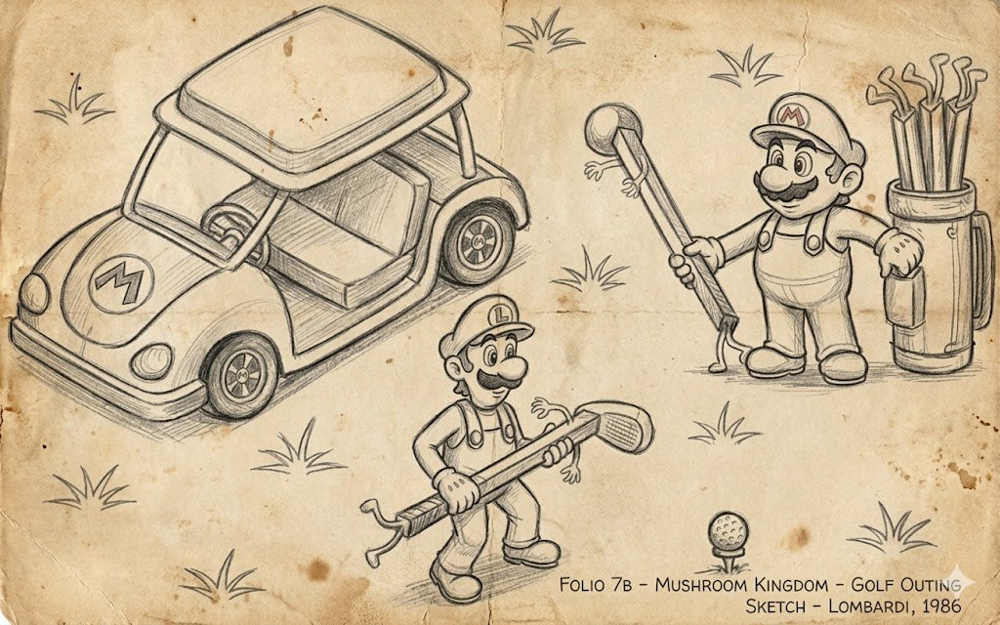
Il resource manager ha un'incarnazione architetturale abbastanza standard, riconoscibile sia nei motori commerciali sia nei piccoli progetti open source. L'idea dell'identità della risorsa tramite la coppia sorgente-e-parametri è il più delle volte implementata a livello tecnologico attraverso il classico pattern Flyweight più una cache, in cui la cache stessa è la garanzia che due richieste con chiavi identiche otterranno una sola e medesima istanza.
Questo schema è facile da vedere in Unity, dove Resources.Load è organizzato su questo principio, in Unreal con i suoi UObject condivisi, e in Source con i suoi materiali e le sue texture. La cache come entità è quasi sempre un'ordinaria hash table più il reference counting, ed è ormai difficile trovare un motore AAA dove sia fatta in altro modo, perché questa combinazione è verificata da anni e non ha alternative, tranne che in alcuni casi esotici in cui vengono aggiunte sopra weak reference o LRU.
La suddivisione dei parametri in espliciti e impliciti è, forse, la peggio documentata di tutte, perché questa meccanica semplicemente non è esposta nell'API pubblica e vive da qualche parte sotto il cofano, ma l'idea è facile da riconoscere dal sistema di override per asset, dove per una singola texture puoi dire «questo mio parametro è sovrascritto, non toccarlo a un cambio delle impostazioni di gruppo», e di fatto questo è proprio quel flag esplicito, solo avvolto in una checkbox dell'editor.
Il reload mirato di un gruppo è tecnicamente implementato tramite streaming, ed è chiaramente visibile in Witcher 3, in Cyberpunk, o in Unreal Engine, dove un cambio di qualità ricostruisce i render target senza sbattere il giocatore nel menu principale.
Il codegen dell'API per un gran numero di combinazioni di parametri il più delle volte appare come uno script esterno Python o Perl che emette header C++; in Unreal un ruolo simile è svolto dall'Unreal Header Tool, che genera molto codice di supporto attorno alla reflection e alla serializzazione degli asset.
Infine, la suddivisione dei manager per tipo è tecnologicamente quasi sempre fatta di singleton type-specific o sottosistemi type-specific; in Unreal Engine questi sono sottosistemi, distribuiti sui livelli engine, editor, game e local-player.
Cosa è cambiato in 20 anni
Al posto di D3DPOOL_MANAGED e D3DPOOL_DEFAULT, che negli anni 2000 definivano l'intera strategia di VRAM, oggi le cose sono formalizzate fino al livello di DXGI_MEMORY_SEGMENT_GROUP, e sebbene i nomi siano cambiati, lo sviluppatore deve comunque pensare a cosa ha nella memoria video veloce, cosa nella lenta memoria di sistema, e chi uccide chi quando lo spazio scarseggia.
Anche la vecchia nozione di lost device non è sopravvissuta come nome, ma si è trasformata in device removed per DX12, in un cambio di swapchain per Vulkan, e in context loss su Android e Switch, e ciascuno di questi nomi descrive il suo caso ristretto, ma il processo di recupero stesso è rimasto lo stesso: butta via tutto, ricrea il device e il contesto, e fai rinascere le risorse dalle descrizioni salvate.
I mip filter formalmente sono sopravvissuti, ma nella produzione moderna sono finiti spinti in secondo piano da un intero piano di tecniche più avanzate come il GPU-driven rendering, i mip streamable e il virtual texturing, dove l'idea che «una texture ha un numero fisso di mip, e sono generati da tale e tale filtro» non copre più una realtà in cui una texture esiste attraverso una moltitudine di parti e livelli di dettaglio caricati on demand.
I #define degli shader oggi vivono sotto forma di shader variant e di una permutation cache in un mucchio di motori, e il numero di combinazioni ora si conta non a dozzine ma a migliaia e decine di migliaia, il che a sua volta ha generato un'infrastruttura a parte per la loro precompilazione e il loro caching tra le run.
Ma nonostante tutti questi cambiamenti nei termini e nell'hardware fisico, la costruzione di base del resource manager resta praticamente intatta, e se ne togli i nomi delle tecnologie specifiche, tutto resta rilevante anche vent'anni dopo.
Una risorsa è ancora definita come dati più parametri di load, la cache è ancora costruita per chiave a partire da questa coppia, i default ha ancora senso raggrupparli e sovrascriverli non globalmente ma per gruppo, il reload è ancora più conveniente nella forma di un reload mirato che nella forma di «uccidi tutto», e la descrizione del load deve ancora essere conservata accanto alla risorsa in nome del recupero.
Questi concetti di base sono risultati organizzati in modo così fondamentale da essere sopravvissuti a un cambio di GPU API, a un cambio di generazioni di console, alla comparsa dell'SSD come nuovo livello di memoria, e alla transizione dalle GPU desktop a quelle mobile, e continuano a funzionare esattamente allo stesso modo in cui erano all'inizio degli anni 2000.
TL;DR
Se provi a esprimere tutto il testo qui sopra in un singolo paragrafo, suonerebbe all'incirca così. Il resource manager non è l'ennesimo pattern Singleton applicato alle texture, ma un'architettura ben rodata del ciclo di vita degli asset, in cui c'è la nozione di identità della risorsa, una cache e policy di gruppo dei default, e due tipi di reload diversi per natura — quello di emergenza per un lost device e quello utente per un cambio di impostazioni — e un'API amichevole per il programmatore in cui questo meccanismo multilivello è ordinatamente avvolto. Una buona architettura si distingue dai pattern di moda di quest'anno proprio per il fatto che le sue formulazioni sopravvivono sia alle API su cui è stata descritta per la prima volta, sia alle generazioni di console in cui è stata provata per la prima volta, sia ai team che l'hanno scritta, e continuano a portare valore là dove nessuno ricorda più nemmeno i nomi delle persone che l'hanno inventata.
P.S. Tutto quanto scritto sopra descrive con discreta accuratezza i resource manager fino a circa il 2022; quel periodo lo conosco per esperienza di produzione personale. Oltre inizia un territorio in cui ho più letture che pratica, e tre argomenti meritano una conversazione a parte: il bindless rendering, Nanite e la PSO cache. Se lavori con uno stack moderno, questi argomenti vale la pena studiarli da materiali più freschi.
P.P.S. La copertina e le immagini delle sezioni sono prese dal meraviglioso sito https://refactoring.guru/ con il loro permesso e ritoccate un po' con la lima.
← Tutti gli articoli